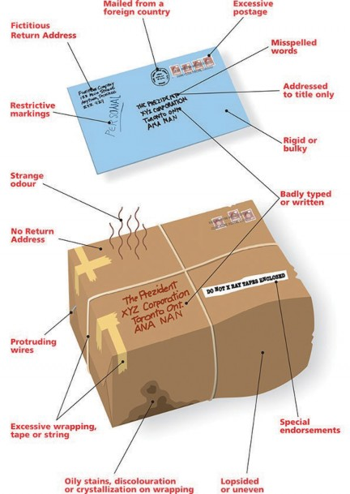

|
Health Link |
8-1-1 |
|---|---|
|
Poison Control |
902-428-8161 |
|
QEII Health Service Centre |
902-473-2700 |
|
Police Non-Emergency |
902-490-5020 |
|
Mental Health Crisis Line |
1-888-429-8167 |
Decisions usually made in the morning by 5:00 am
|
Storm Button |
www.novascotia.ca |
|---|---|
|
|
@nsgov |
|
Phone |
902-424-6045 or |
|
1-877-424-6045 |
|
|
Broadcast |
media TV or radio |
Everyone is responsible to help reduce the impact that emergency events may have on themselves, their peers, and their department.
Be vigilant about protecting your own safety and security.
Report anything unusual to your supervisor or to security.
Watch for building security passes — do not provide access to your workplace to unauthorized people.
Know who to contact in the event of an emergency. Keep those numbers up to date.
Know how to respond to any of the emergency situations described in this guide.
Be familiar with the location of fire extinguishers, first aid kits, and AEDs (automatic external defibrillator).
Every emergency event is unique. You will receive direction on what to do. You may be asked to:
Stay calm and remain in your area.
Wait for further instructions or updates from managers, floor emergency wardens, or trusted communications sources.
When advised that a threat no longer exists, return to normal operations.
Remain calm
Decide how to respond to reduce your exposure to the threat:
Run – If the threat is not in your immediate area,
evacuate as quickly and quietly as possible
help others to leave as well
Hide – If the threat is in your immediate area,
lock and barricade doors and windows
close window shades
stay away from doors and windows
turn phones on silent or off — not vibrate
await instructions from a trusted source
Fight – If the threat is imminent and you have the ability and opportunity,
fight back
use whatever materials you have at your disposal to neutralize the threat
Remain indoors
Lock external windows
Await direction from your manager, floor emergency warden, or trusted source
Remain calm
Exit the building immediately, using most direct route
Use the stairs to evacuate. Do NOT use elevators.
Immediately go to designated Assembly Point and await for further instructions.
Stay together and keep a clear path for First Responders.
Do NOT re-enter the building until the All-Clear is given by the Chief Warden.
**Persons in need of assistance during evacuation should have a personalized plan. If you need help, make this known to your manager and floor emergency wardens**
Severe weather watches and warnings are issued by Environment Canada and are monitored by the Emergency Measures Office (EMO).
Closures of government offices due to severe weather are determined and communicated by Communications Nova Scotia:
Novascotia.ca
Twitter @nsgov
902-424-6045
1-877-424-6045
Check road and weather conditions before travelling. Contact your supervisor for guidance before travelling.
If you are at work, stay in the building until direction from your Manager or Floor Emergency Wardens.
Once the storm has past, report injuries or damage to Floor Emergency wardens or first responders. Complete a departmental incident report. Notify your Manager of any issues immediately.
When exiting the building, beware of downed power lines, broken glass, and unsafe areas.
Check road and weather conditions before travelling. Contact your supervisor for guidance before travelling.
If there is water damage in your office, notify a manager and building services immediately.
Turn off electrical equipment in the area, if safe to do so.
Move to a dry safe location and await instructions from floor wardens.
Do not re-enter flooded area until it has been cleared.
Do NOT trigger a fire alarm unless there is an actual fire.
Remain calm and quiet.
If possible call 911 or 9-911 (work phone)
Notify those in your immediate vicinity.
Evacuate if possible (Run), avoiding open areas and hallways.
If you cannot evacuate, find a safe place to Hide.
Set all cellphones/smartphones to silent (not vibrate).
If you are discovered, as a last resort you can Fight. Defend yourself with whatever makeshift weapon you can find in your workspace.
Keep your government ID visible at all times while in government buildings.
When you access a building with your government ID, ensure the door is closed behind you. Do not open doors for anyone without a visible Government ID
Always use common sense and good judgement when approaching strangers in the workplace.
Ask if you can direct them, in a friendly and assertive tone.
If the person claims to be an employee, ask for identification
If the person is hostile or threatening, retreat and call police – 9 11 or 9-911. Do NOT attempt to evict them yourself.
Notify Security if possible.
Remain calm.
Do not jeopardize your own safety or that of other people.
Do not try to apprehend, initiate contact or interfere with individual if he or she refuses to leave.
If the person is hostile or threatening, retreat and call police – 911 or 9-911.
Notify the nearest Floor Emergency Warden and/or Security immediately.
Note description of the individual and anything unusual.
Do not attempt to follow the individual.
Bomb threats can be received in a variety of ways. Most bomb threats are made by persons who want to create an atmosphere of general anxiety or panic. All such threats must be taken seriously and handled as though a bomb is in the building.
Remain Calm
Listen to the caller, be calm and courteous. Do not interrupt the caller.
Try to keep the caller on the line.
Without upsetting caller, try to obtain as much information as possible. Ask questions, such as “Where is the bomb?”, “When is it going to go off?”, “What kind is it?”, “What does it look like?”
Take notes on what is said and your observations about background noise, voice, language, etc.
Notify someone in the office while the call is still ongoing. They should contact 911 or 9 – 911.
Initiate call trace action (if available) while the call is ongoing (*57).
Follow any instructions given by your Supervisor, Security, or First Responders.
If you need to evacuate quickly, pull the fire alarm (This is not a misprint)
To request telephone tracing, call:
Date: Time:
Call Duration:
Questions to Ask:
What time will the bomb explode? Where is it?
What does it look like?
Why did you place the bomb? Where are you calling from? What is your name?
What is your phone number?
|
Sex: |
Male |
Female |
Not Certain |
|
|---|---|---|---|---|
|
Accent: |
English |
French |
Other: |
|
|
Voice: |
Loud |
Soft |
Other |
|
|
Speech: |
Fast |
Slow |
Other |
|
|
Diction: |
Good |
Nasal |
Lisp |
Other |
|
Manner: |
Emotional |
Calm |
Vulgar |
Other |
Voice was familiar (specify):
Background Noises?
If you find or receive a suspicious object, package, or mail:
Remain Calm.
Do not touch or move the object.
If you are holding the object gently set it down on a solid surface or on the floor.
Do not cover it.
Do not attempt to disarm it.
Close doors to reduce air flow, and isolate the area.
Alert your supervisor and Security if available.
Alert others, leave the building.
Call 911 or 9-911 from government phones when safe to do so
If you come in contact with package contents,
Remain where you are and close the doors.
Await further instructions from First Responders.
Otherwise, leave the immediate area and remain out of the area until told you can return.

Courtesy of Canada Post guidelines for handling suspicious mail.
If you discover a fire
Remain calm.
Shout “Fire, Fire, Fire” to draw attention to the situation.
Activate the nearest fire alarm. Do not attempt to put out the fire unless you feel confident to do so or have received training and ensure you have the proper sized fire extinguisher to completely extinguish the fire safely.
Exit immediately using stairs; do not use elevators.
From a safe location, call 911 or 9-911 and follow instructions.
If you encounter smoke, use an alternative exit or go to an area of refuge.
Once outside the building, gather in your assembly area
Re-enter the building only after given the “All Clear” by the Chief Warden.
When the fire alarm is activated
Remain calm.
Immediately evacuate the building using the closest exit. Do not use elevators.
Do not retrieve personal belongings.
If you have mobility issues follow your personal evacuation plan with the assistance of your “buddy.”
Do not attempt to silence or reset any fire alarm panel. Wait for assistance from the building maintenance team or a fire department representative.
When trapped in a room or caught in smoke
Remain calm.
Crouch low to the floor and crawl, breathing from your nose.
Close as many doors as possible between you and the fire.
Block smoke from entering by sealing all cracks, especially around doors, with clothing. Wet clothing, if possible.
Do not open window or break glass unless absolutely necessary. 6. Call 911 or 9-911
Elevator malfunction
Use emergency call button or phone inside the elevator, or a cell phone, to contact building maintenance and/or security.
Give your name and contact information, and specific location — building, elevator location or number, floor
Wait for rescue. Be patient. Technician has to get to you, then take time to get you out.
Reassure others trapped with you, ask them to stay calm, and tell them what you have learned about the rescue plan.
Power failure
Set all light fixtures, equipment, and appliances switches to the OFF position to protect them when the power comes back on.
It is NOT necessary to unplug telephones.
Remain in place and await instructions from your Manager, Floor Emergency Wardens or Security.
Do not attempt to use the elevator.
Report all persons who may be trapped in elevators.
Alert Building Maintenance/Security and Departmental Health & Safety Coordinator.
Unusual smells
Remain calm.
Advise your Manager and Building Maintenance of the situation, and allow them to investigate further.
Follow instructions given by your Manager or Building Maintenance.
Instructions will vary depending on situation, they may include evacuation, shelter in place, or no action. You should be ready to respond.
When necessary, call 911. They will assist on-site officials in determining the need for evacuation or other response.
Follow all directions given.
Chemical release
Remain calm.
Stay where you are and enact shelter in place procedures.
Remain in your building and monitor emails and phone calls for further instructions.
If someone collapses, it may be due to cardiac arrest. It is critical to call 911 ASAP. Instructions on life saving treatments can be provided over the phone, allowing you to provide basic care.
Call for help! Ask someone to notify the Floor Emergency Warden, get First Aid Kit and AED (Automated External Defibrillator) immediately.
Complete a scene survey and make the area safe.
Call 911 or 9-911, if someone else is nearby have them do it for you. Have caller follow dispatcher’s instructions.
Assess Airway, Breathing, Circulation (ABCs) – immediately start CPR if necessary and utilize an AED
If possible have someone meet the ambulance at the building address and bring them to you.
Continue CPR until directed by First Responders (note - sometimes First Responders may wish assistance with patient care)
Complete your departmental Incident Report and inform your manager.
Remain calm and call out for help (preferably someone who is first aid certified). Call or have someone call 911 or 9-911
Complete a scene survey and make the area safe.
Stay with the injured or ill person and await emergency services.
Provide first aid for the injuries.
Do not attempt to move injured person, unless they are in imminent danger. Do not transport in personal vehicle unless directed by paramedics.
Stay with the injured person until First Responders arrive.
Complete a departmental Incident Report and inform your Manager.
Remain calm. Ask for consent from the individual to provide first aid.
Locate a Floor Emergency Warden or first aider.
When in doubt, call 911 or 9-911.
Provide first aid for the injuries
If medical attention is required but no ambulance necessary, take the individual to the hospital or clinic by taxi. Or wait with them while a loved one picks them up. Do NOT use personal vehicles.
Do not send injured person alone and insist that they do not drive themselves to seek treatment.
Inform your Manager and complete a departmental Incident Report.
Be aware of unusual behaviour. Advise your manager if you have concerns. Follow the steps above for an Injury or Illness.
Area of Refuge
An area of refuge keeps people who are unable to evacuate safe while waiting for emergency services. Typically located in stairwells. Sometimes referred to as “Safe Zone.”
Assembly Point
A location designated as the place for a group to meet or for people to gather in an emergency. This is sometimes referred to as a “Muster Station.”
Buddy
The “Buddy System” is a procedure whereby a colleague is given the responsibility of ensuring that a person who requires assistance is alerted of the emergency and assists that person in responding.
Chief Warden
Individual responsible to lead the response to an emergency event. The Chief Warden assumes control of the building occupants from the time an alarm is given until emergency services takes over.
Evacuation
Remove (someone) from a place of danger to a safe place.
First Responders
Organizations that ensure public health and safety by responding to different emergencies — police, firefighters, and paramedics.
Floor Emergency Wardens
Primary role is to lead building occupants in their area in responding to emergencies. This may include evacuation or providing information on emergency situations. Positions previously referred to as Fire Wardens.
Hold and Secure
A precautionary response to a threat in the general area of your building. As a precautionary measure, outer doors are locked and no one enters or leaves the building. Inside business continues as usual.
Lockdown
An action directed by an authority to respond to an imminent threat to people. May include Run, Hide, or Fight, depending on the threat.
Restricted Access
Direction may be given to further limit access to certain structures during a specific event.
Shelter in Place
An order to keep people safe from external hazards by remaining indoors. Examples could include a toxic material release or riot.
Questions/Comments? Contact your Floor Warden, Departmental Emergency Preparedness Officer or Corporate Security, Internal Services Department.
© Crown copyright, Province of Nova Scotia, 2017; Provincial Employee Emergency Guide; ISBN: 978-1-55457-728-6